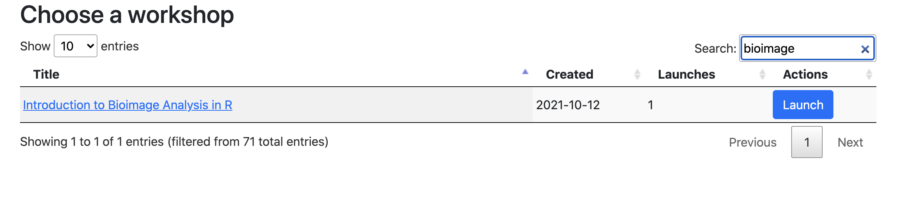

This workshop covers basic methods of the image processing and image analysis in R using the Bioconductor package “EBImage” and the Orchestra platform. In addition, the image dataset is obtained from ExperimentHub using the “BioImageDbs” package. Using this dataset, we perform a supervised image segmentation using the U-NET model, one of deep learning models, provided by the rMiW package.
このワークショップでは、BioconductorパッケージであるEBImageを使って、Rでの画像処理・画像解析の基本的な方法を扱う。次に、BioImageDbsパッケージを用いて、ExperimentHubからの画像データの取得を行う。さらに、rMiWパッケージが提供する、Deep learningモデルの１つであるU-NETモデルを用いて、教師有り画像セグメンテーション（領域分割）を学び。このワークショップは、Orchestra環境にて実施する。
An image is treated as an array format in R. Officially, arrays are the R data objects which can store data in more than two dimensions.
画像は、R上において、アレイ形式/配列形式として扱われる。 アレイは、2次元以上のデータを格納できるRデータオブジェクトである。
These packages are the focus of this workshop: / このワークショップでは、これらのパッケージに焦点を当てます。
Please see the workshop DESCRIPTION for a full list of dependencies.
詳細は、ワークショップの DESCRIPTIONファイルを見てください。
| Activity | Time |
|---|---|
| Introduction | 20 min |
| Basic image processing using EBImage | 15 min |
| Image segmentation using BioImageDbs and rMiW | 20 min |
| Q&A | 5 min |
| 内容 | 時間 |
|---|---|
| イントロダクション | 20 分 |
| EBImageを用いた基本的な画像処理 | 15 分 |
| BioImageDbsとrMiWを用いた画像セグメンテーション | 20 分 |
| 質疑応答 | 5 分 |
You can get access to the cloud platform for the beginning.
And then, you choose the “Introduction to Bioimage Analysis” workshop as below.
本ワークショップは、cloud platformを使って行います。
各自、Orchestra環境にログインして、所定のイメージをランチしてください。
